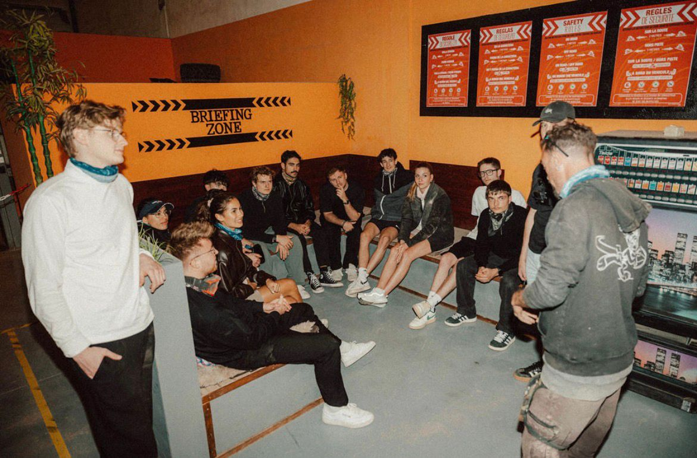
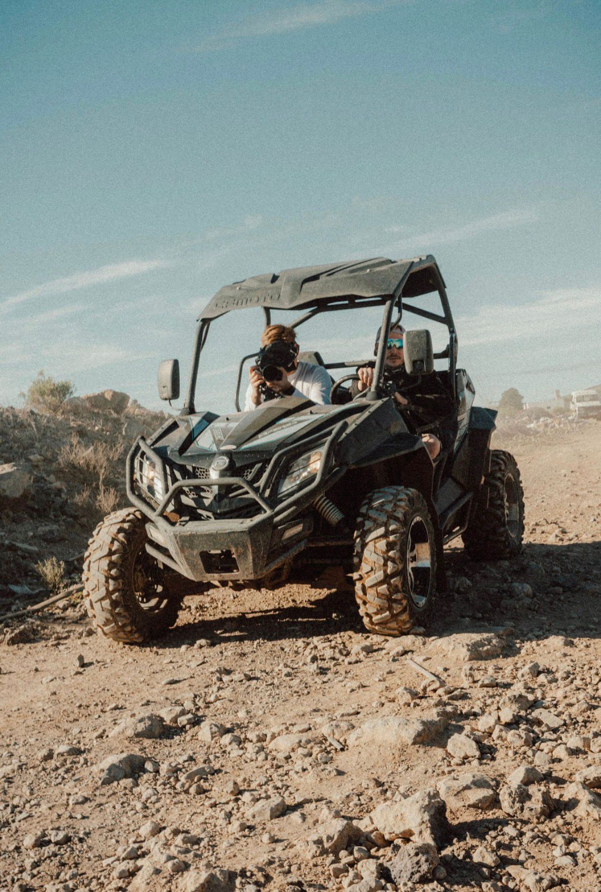
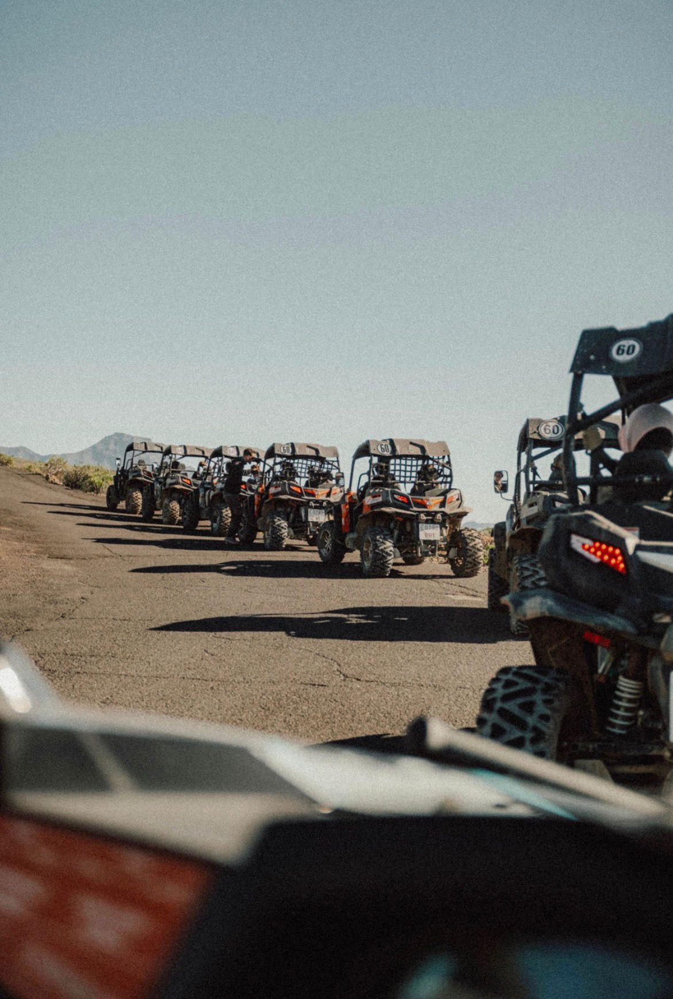
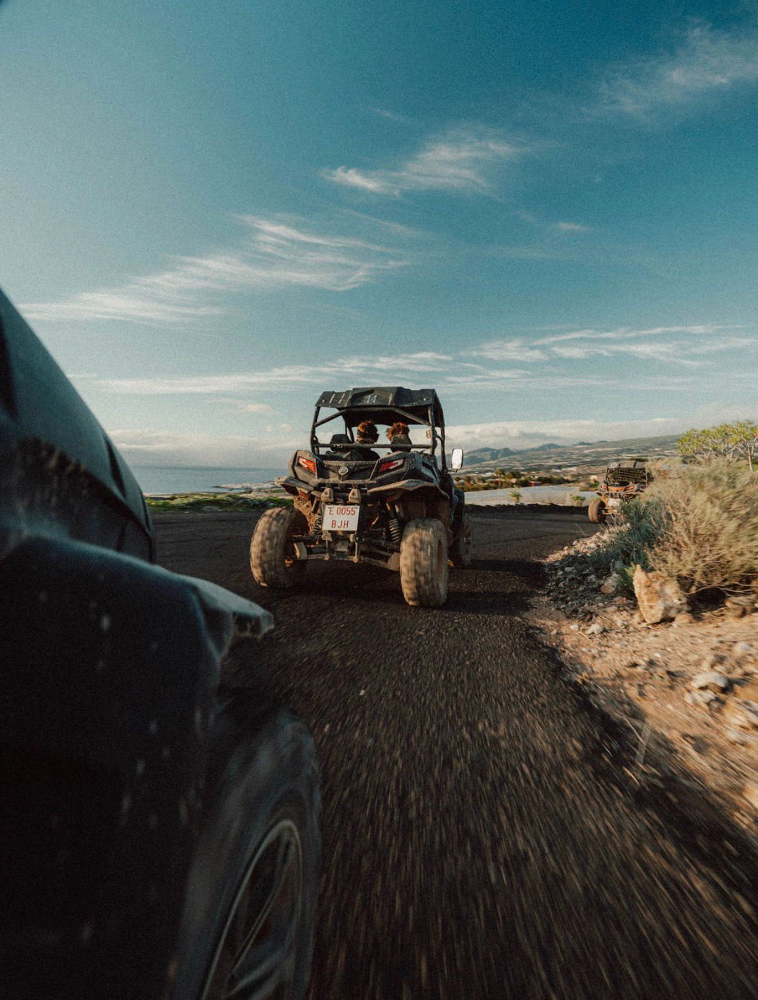
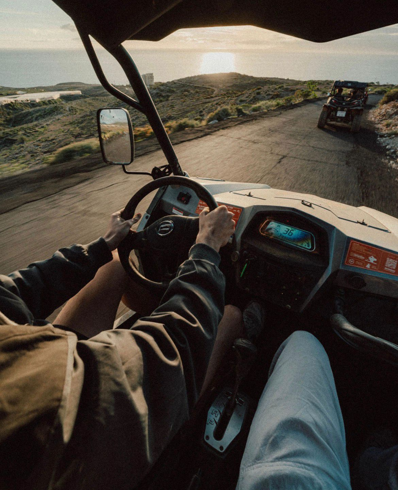
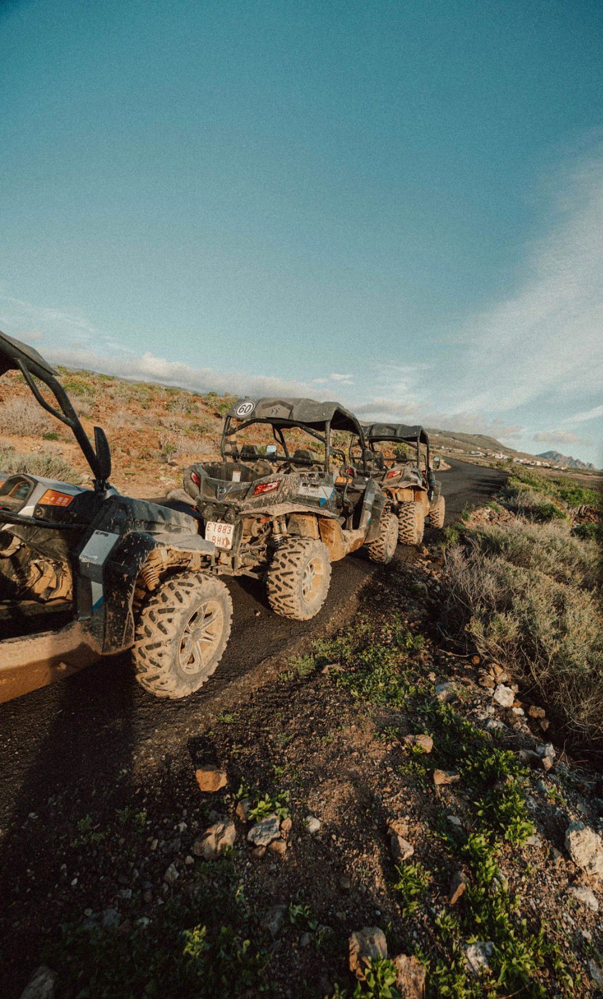

Tenerife è un'isola vulcanica: questo significa strade sterrate, sentieri di lava, paesaggi marziani. Il modo giusto per attraversarla è in buggy: due posti, motore reattivo, niente vetri tra te e il vento.
Il percorso costiero standard tocca El Puertito, Playa San Juan e gli scorci più scenografici del sud. Per chi vuole spingersi oltre, esistono varianti off-road che entrano nei tracciati più tecnici, e una versione stargazing serale per godersi il cielo del Teide — uno dei migliori al mondo per osservazione astronomica grazie alla quota e alla bassissima inquinamento luminoso.
L'attività inizia con un briefing introduttivo: i mezzi sono preparati per garantire una guida sicura e coinvolgente, le guide esperte fanno la differenza tra una "gita" e un'esperienza vera.
Partenza nel tardo pomeriggio, percorso costiero con pause foto, arrivo allo spot del tramonto sull'oceano. Durata ~2h.
Tour tecnico tra sentieri vulcanici e strade sterrate. Versione adrenalinica, richiede patente B. Durata ~2.5h.
Esperienza serale: si guida verso una zona buia, sosta con mappa stellare, vista sulla Via Lattea. Durata ~3h.
Operiamo con partner certificati Active Tenerife: forte focus su sicurezza, mezzi sempre revisionati, guide esperte. Più info sulle attività off-road dell'isola: active-tenerife.com








Sunset, off-road o stargazing — dimmi quale formula ti chiama e ti organizzo tutto.
💬 Contattaci su WhatsApp